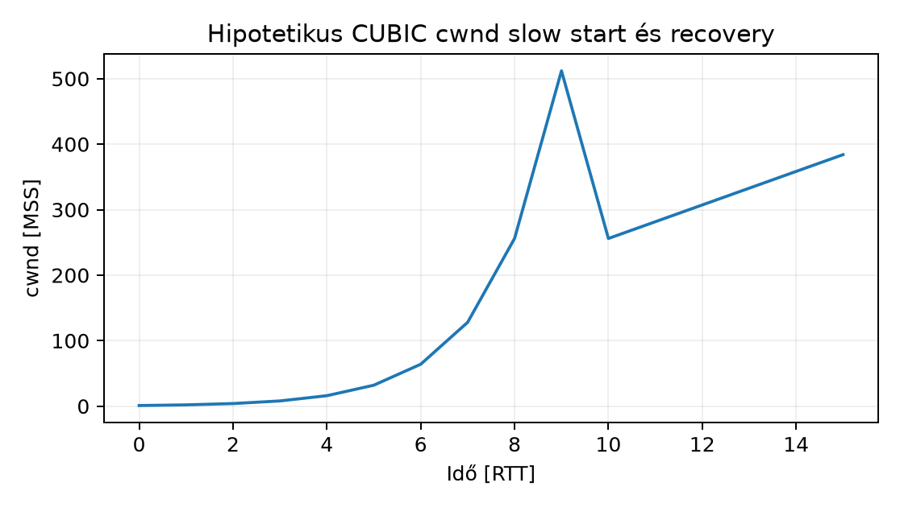

Egy C++ szolgáltatás nagy backupot küld egy távoli adatbázisba. A
lokális iperf3 szerint a link képes 1 Gbit/s-ra, de a valós
TCP-átvitel csak 300 Mbit/s. A napló nem mutat alkalmazáshibát, és a
CPU-kihasználtság is alacsony. A probléma a transport rétegben van: a
TCP nem ismeri a linkkapacitást, hanem a veszteségből és a
késleltetésből becsli, mennyi adatot engedhet a hálózatra. Az alfejezet
a congestion window és a receive window, a BDP és a loss/queueing jel
viszonyát tanítja, hogy a mérésből ne konfigurációba ugorjunk, hanem
mért bottleneckhez igazítsuk a szállítót.
A kongesztiószabályozás (congestion control) a küldő TCP állapota, amely korlátozza a hálózaton lévő, még nyugtázatlan adatot. A congestion window (cwnd) a küldő becslése arról, mennyi adatot engedhet a hálózatnak; bájtban mérjük. A receive window (rwnd) a fogadó által hirdetett pufferterület, amelyet d131 tárgyal. Az elküldött, de nem nyugtázott adat mennyisége a flight size. A küldő soha nem lépheti túl a kettő minimumát: A cwnd tehát a hálózati torlódásra adott becslés, az rwnd pedig a fogadó alkalmazás visszanyomása. A bandwidth-delay product (BDP) az az adatmennyiség, amely a linken egy RTT alatt úgy fér át, hogy a küldő folyamatosan ad, és a nyugtázás visszaér. A window scaling a TCP fejléc ablakmezőjének kiterjesztése; a slow start threshold (ssthresh) az a cwnd-határ, amely alatt a küldő exponenciálisan, felette lineárisan növel. Az ECN a torlódást csomagfeldobás helyett bitjelöléssel jelzi.
A d008 modell szerint a bottleneck előtti sor a kihasználtság növelésével megnöveli a késleltetést. A loss-vezérelt congestion control a veszteséget tekinti a telítettség indikátorának, ezért a cwnd-t addig növeli, amíg a sor túlcsordul; a delay-alapú vagy modellalapú megközelítés (például BBR) ezt kívánja elkerülni.
A BDP a tárolt adatmennyiség a hálózati pipe-ban. Ha a bottleneck kapacitása [bit/s], az alap RTT (base RTT, üres hálózat) [s], akkor: Átváltva bájtba: Például , esetén:
A küldő elvi átviteli sebessége: Ha , akkor , a link kihasználatlan. Ha , a többlet a bottleneck előtti sorba kerül, a tényleges RTT nő, és a veszteség valószínűbb. A loss-vezérelt hosszú távú átviteli sebességre a Mathis-képlet egy modell: ahol a veszteség aránya. Ez a képlet csak stabil, véletlen loss melletti, loss-vezérelt TCP-re ad becslést, nem mért eredmény. Az ablakmező a TCP fejlécben 16 bites, ezért window scaling nélkül a maximum 65 535 bájt. A scaling option (RFC 7323) legfeljebb 14 bit eltolást adhat, így az effektív maximum bájt körüli. A Linux automatikusan alkalmazza a scalinget, ha a kapcsolatban mindkét fél támogatja.
A cwnd BDP-hez viszonyított helyzete expliciten mutatja, miért kell a
transport puffernek legalább BDP-nyi adatot tartania: ha a küldő nem tud
legalább ekkora puffert fenntartani, nem tudja kihasználni a linket. A
fogadó oldalon az autotuningos net.ipv4.tcp_rmem hasonlóan
növeli az rwnd-t.
A kapcsolat kezdetén a küldő nem ismeri a hálózat kapacitását, ezért
a cwnd kicsi (Linuxban tipikusan 10 MSS). A slow start
fázisban minden ACK-ra a cwnd egy MSS-sel nő, így a növekedés egy RTT
alatt megduplázódik: exponenciális. Amikor a cwnd eléri az
ssthresh-t, a congestion avoidance lép:
minden RTT alatt nagyjából egy MSS-t növel. Ha loss következik be, a
küldő a cwnd-t és az ssthresh-t csökkenti; három duplicate
ACK fast retransmit-et indít, majd fast
recovery következik. Időtúllépés (RTO) esetén a cwnd visszaesik
a kezdeti értékre, és slow start indul.
A CUBIC congestion control a cwnd-t egy valós idejű
változó,
függvényében növeli a W_max közelében, ami gyorsabban talál vissza a
korábbi kapacitáshoz, de a loss-vezérelt jelleg megmarad. A
BBR ezzel szemben a bottleneck sávszélességét és a base
RTT-t méri, és pacinggel adja a csomagokat; célja a BDP kihasználása
anélkül, hogy állandó standing queue-t építene. A Linux kernelben
mindkettő modulként elérhető, az alapértelmezett és az elérhető lista
release-függő; a laborban a
sysctl net.ipv4.tcp_available_congestion_control mutatja a
támogatottakat, de e dokumentum nem ellenőrizte az aktuális Ubuntu 24.04
pontos értékét.
Az ECN (Explicit Congestion Notification) a router
queue növekedésekor a csomag CE bitjét állítja; a vevő ECE-t küld, a
küldő CWR-t, és a cwnd-t úgy csökkenti, mintha loss történt
volna, csak újraküldés nélkül. Ezáltal a torlódásjelzés korábbi, mint a
túlcsordulás. A bekapcsolás előtt ellenőrizni kell, hogy a bottleneck
nem dobja-e a CE-jelölt csomagokat, mert az rosszabb, mint a sima
loss-based működés.
A loss tehát a végletes túlcsordulás jele; a queueing növekedése a d008 szerint növeli a latenciát, mielőtt loss lenne. A CUBIC addig növeli a cwnd-t, amíg a puffer meg nem telik; ez a jelenség bufferbloat. A BBR a pacing rate beállításával a queue-t kicsiben tartja, ezért a delay érzékenyebb szolgáltatásoknál előnyös, de a ki-/belépő forgalom együttélésekor is mérni kell.
A labtopológia: lab-vm-a (192.0.2.10) és
lab-vm-b (192.0.2.20) egy izolált 1 Gbit/s virtuális
bridge-en. A hipotetikus base RTT ping-gel 12 ms. A cél a
BDP kiszámítása, a cwnd megfigyelése, majd a loss/queueing okozta
eltérés értelmezése.
Az alábbi parancsok lab-vm-a hoston futnak, felhasználó
lab, a sysctl olvasása root nélkül is
lehetséges, a iperf3 és ss telepítése
szükséges; semmilyen élő változtatást nem végzünk.
# 1) Base RTT mérése és BDP számítás
ping -c 20 -i 0.2 192.0.2.20
# Várt (hipotetikus): min/avg/max/mdev = 11.5/12.0/13.1/0.4 ms
# 2) A TCP scalability és congestion control ellenőrzése
sysctl net.ipv4.tcp_congestion_control
sysctl net.ipv4.tcp_window_scaling
sysctl net.ipv4.tcp_rmem
sysctl net.ipv4.tcp_wmem
# 3) Átviteli mérés egykapcsolatos iperf3-mal lab-vm-b-n
# lab-vm-b-n: iperf3 -s -1
iperf3 -c 192.0.2.20 -t 30 -P 1
# Közben lab-vm-a-n:
ss -tinm 'dport == :5201 or sport == :5201' | while read line; do
echo "$(date +%T.%3N) $line"
sleep 0.1
doneA ss -tinm kimenet megmutatja a cwnd,
ssthresh, rtt, rttvar,
bytes_retrans, pacing_rate értékeket. Ha a
cwnd a mérés alatt eléri az elméleti 1.43 MiB (kb. 1000 MSS 1460
bájtnál) környékét, a link kihasznált; ha a cwnd kicsi és
ssthresh is alacsony, a hálózat loss-t jelez, vagy a fogadó
ablak szűk. A bytes_retrans növekedése explicit
retranszmissziókat mutat. A
nstat -az | grep -E 'TcpRetrans|TcpExtTCPTimeouts|TcpExtTCPLossProbes'
a kernel statisztikáját adja.
A lenti ábra egy hipotetikus CUBIC slow start és loss utáni avoidance lefutást mutat. A vízszintes tengely RTT-egységben méri az időt, a függőleges tengely a cwnd MSS-ben. Az értékek számított illusztrációk, nem laborban mért adatok.

| Idő [RTT] | cwnd [MSS] |
|---|---|
| 0 | 1 |
| 1 | 2 |
| 2 | 4 |
| 3 | 8 |
| 4 | 16 |
| 5 | 32 |
| 6 | 64 |
| 7 | 128 |
| 8 | 256 |
| 9 | 512 |
| 10 | 256 |
| 11 | 281.6 |
| 12 | 307.2 |
| 13 | 332.8 |
| 14 | 358.4 |
| 15 | 384 |
A cwnd és rwnd összekeverése. Tünet: a
ss szerint az rwnd nagy, ezért a felhasználó azt hiszi, a
küldő korlátlanul küldhet. A cwnd a küldő saját korlátja, amelyet a
loss/ECN vezérel. Hipotézis: a küldő cwnd kicsi. Adatgyűjtés:
ss -tinm megmutatja a cwnd-t; a fogadó oldalon ugyanez az
rwnd-t. Egy változtatás: ha a fogadó rwnd szűk, növelje az autotuning
felső határát; ha a cwnd kicsi, a hálózati loss a gond. Verifikálás: a
mérésben a cwnd növekszik-e.
A terhelt RTT használata BDP számításhoz. Ha a mérés
közben mért RTT 80 ms, az nem az alap RTT; a BDP ezzel túlbecsült lesz.
Az ellenpróba: üres hálózaton mérjük a base RTT-t; a
ss -tinm rtt és rttvar értékét is
rögzítsük. A hosszú RTT és a standing queue miatt a tényleges throughput
annál kisebb, mint a base RTT-vel számolt BDP.
Minden loss-t hibának tekinteni. A loss-vezérelt TCP
normális működése során ritkán loss-t generál, hogy megtalálja a
kapacitást. Ha a bytes_retrans nő, de a throughput stabil,
nem feltétlenül hiba. A gyanús az, ha a retranszmissziók aránya magas, a
cwnd folyamatosan alacsony, és az RTO-k gyakoriak.
Globális tuning mérés nélkül. A
net.ipv4.tcp_wmem vagy tcp_rmem felső
határának növelése nem segít, ha a bottleneck a NIC, a CPU, a QoS vagy a
külső szolgáltató. Először a bottlenecket kell meghatározni:
tc -s qdisc show dev eth0 a lokális qdisc veszteséget
mutat; ping/traceroute a hálózati
csomagvesztést; mpstat/perf a CPU-t. Egyetlen
változtatással csak a leginkább valószínűsített szűk keresztmetszetet
módosítjuk, majd újra mérünk.
F1 (magyarázó). Számold ki a BDP-t , base RTT esetén bájtban. Milyen transport bufferigény következik ebből a küldő oldalán? Miért nem elég a window scaling nélküli 65 535 bájt?
F2 (adminisztrációs/konfigurációs). A labhoston
(lab-vm-a, lab felhasználó) ellenőrizd a TCP
congestion control és ablakbeállításokat:
net.ipv4.tcp_congestion_control,
net.ipv4.tcp_window_scaling,
net.ipv4.tcp_rmem, net.ipv4.tcp_wmem. Ezután
kapcsold be az ECN-t egy ideiglenes lab teszthez
(sysctl -w net.ipv4.tcp_ecn=1), mérj egy rövid
iperf3 munkamenetet, majd állítsd vissza az eredeti
értéket. Rögzítsd a parancsokat, az ellenőrzést és a rollbacket.
F3 (diagnosztikai/failure/recovery). Egy
szolgáltatás 10 Gbit/s-os várt sávszélességen csak 2 Gbit/s-ot ér el. A
ss -tinm a cwnd értékét gyakran 200 MSS alatt
mutatja, a bytes_retrans növekszik, a ping RTT
5 ms, de néha 200 ms. Hipotézis: loss/queueing, vagy a fogadó ablak
kicsi? Gyűjts adatokat, és adj egy mérési tervet, amely megkülönbözteti
a bottleneck loss-t, a bufferbloat-ot és a fogadó korlátot. Egy
változtatás után milyen postconditiont vársz?
M1. A BDP: A küldőnek legalább ekkora TCP sndbuf-re van szüksége, hogy a pipe tele legyen. A window scaling nélküli 65 535 bájt ennél jóval kisebb, ezért a küldőnek meg kell állnia, amíg az ACK visszaér, így a link kihasználatlan. Postcondition: a tanuló a BDP-ből transport bufferigényt számol, és indokolja a scaling szükségességét.
M2. Parancsok:
sysctl net.ipv4.tcp_congestion_control
sysctl net.ipv4.tcp_window_scaling
sysctl net.ipv4.tcp_rmem
sysctl net.ipv4.tcp_wmem
# eredeti rögzítése: orig=$(sysctl -n net.ipv4.tcp_ecn)
# bekapcsolás és mérés
sudo sysctl -w net.ipv4.tcp_ecn=1
iperf3 -c 192.0.2.20 -t 5 -P 1
# visszaállítás
sudo sysctl -w net.ipv4.tcp_ecn="$orig"Az ellenőrzés: sysctl net.ipv4.tcp_ecn az érték
visszakerül az eredetire. Postcondition: a labhost ECN
beállítása azonos az eredeti állapottal, a futott mérés nem maradt
fenn.
M3. Adatgyűjtés: ping base RTT és
terhelt RTT; iperf3 hosszabb mérés; ss -tinm a
cwnd, ssthresh, rttvar, bytes_retrans;
tc -s qdisc show dev eth0 a lokális sorban; esetleg
tcpdump a capture-ön a retranszmissziókért. Ha a cwnd kicsi
és a qdisc drop nő, a loss a bottleneck. Ha a
qdisc backlog magas, a latency nagy, a loss alacsony, akkor
bufferbloat. Ha a fogadó rwnd kicsi, a ss a
fogadó oldalon mutatja. Egy változtatás: ha bufferbloat, a bottleneck
qdisc-et cseréljük fq_codel-re vagy cake-re;
ha fogadó ablak, növeljük az autotuning maximumát.
Postcondition: a mérésben a cwnd eléri a BDP-t, a
retranszmissziók aránya csökken, a terhelt RTT nem ugrik meg.
A TCP-átvitelt a küldő cwnd és a fogadó rwnd korlátozza; a cwnd a congestion feedbackből becsült érték. A BDP megadja az üres hálózaton egy RTT alatt a pipe-ban lévő adatmennyiséget, és ebből a transport bufferigényt számoljuk. A slow start exponenciálisan, az avoidance lineárisan növel; a loss/ECN csökkenti a cwnd-t. A CUBIC loss-vezérelt, a BBR modellalapú; a tuning csak a mért bottleneck azonosítása után következhet.
Az alábbi hivatkozások a megadott forráskiindulópontokat tartalmazzák, de ebben a munkamenetben nem volt webes ellenőrzés, ezért az RFC-k státuszát, az Ubuntu 24.04 kernel aktuális congestion control listáját és a környezeti mérési eredményeket nem állítom ellenőrzöttnek.